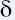
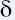

Learning objectives
Learning objectives
After completing this simulation experiment one should be able to
- Model a given real system to an equivalent simplified model of a cantilever beam with suitable assumptions / idealisations
- Calculate the stiffness of a real system which is assumed to be equivalent of a cantilever beam
- Determine the mass of the system actively participating in dynamics
- Determine the natural frequency of a given system equated to a cantilever beam
- Determine the influence of material properties like Youngs modules (E) and density (
 ) in dynamics
) in dynamics - Determine the influence of cross section, length of cantilever beam in dynamics
Cantilever Beam Introduction
Look at the few of the real systems shown below,try to make suitable assumptions to deduce the system to a cantilever beam.

An aircraft wing as a cantilever beam

An atomic force probe

A tower crane overhang is like a cantilever beam

A double overhang folding bridge
A system is said to be a cantilever beam system if one end of the system is rigidly fixed to a support and the other end is free to move.
Vibration analysis of a cantilever beam system is important as it can explain and help us analyse a number of real life systems. The following
few examples can be simplified to a cantilever beam, thereby helping us make design changes accordingly for the most efficient systems.
To understand the effect of free vibration on the cantilever beam, we need to understand and calculate the following parameters.
- Stiffness of the cantilever beam.
- Mass of the cantilever beam.
- The mass (M) of the whole system is considered to be lumped at the free end
- No energy consuming element (damping ) present in the system ie. undamped vibration
- The complex cross section and type of material of the real system has been simplified to equate to a cantilever beam
 Since the cantilever beam is undergoing free vibration, the governing differential equation of the system considering undamped free vibration can be given by
Since the cantilever beam is undergoing free vibration, the governing differential equation of the system considering undamped free vibration can be given by
 ;
;

Lets try to understand these equations by doing a few simple simulations, go to next tab procedure to find out how to run the simulation to EXPLORE (expR) and to EXPERIMENT (expT). A talking tutorial or a self-running demo with narration can be seen at EXPLAIN (expN)

FREE VIBRATION SDOF SYSTEM - expT PROCEDURE
AIM:
To find the damping (c) of the given beam.
PROCEDURE:
Begin the experiment by clicking the start experiment button.
 1. Find logarithmic decrement (  ) from displacement v/s time graph.
The logarithmic decrement is defined as follows.
1. Find logarithmic decrement (  ) from displacement v/s time graph.
The logarithmic decrement is defined as follows.
 Here x1 and xn refer to the displacements at the first and nth peak in the displacement v/s time
graph.
Here x1 and xn refer to the displacements at the first and nth peak in the displacement v/s time
graph.
The displacements at the peaks can be found using the location slider.

 2. Find the damping ratio (
2. Find the damping ratio ( ) from the logarithmic decrement (). The damping ratio is given by
) from the logarithmic decrement (). The damping ratio is given by

 3. Find beam stiffness (k) N/m from Youngs modulus (E), area moment of inertia (I) and length (L).
The stiffness for different beams is given below
3. Find beam stiffness (k) N/m from Youngs modulus (E), area moment of inertia (I) and length (L).
The stiffness for different beams is given below

 4. Find natural frequency (
4. Find natural frequency ( ) rad/s from
) rad/s from  and . can found from the FFT in the graph
window.
and . can found from the FFT in the graph
window.

 5. Find equivalent mass (
5. Find equivalent mass (
 ) kg from and k.
) kg from and k.

 6. Find critical damping (cc) Ns/m from meq and k.
6. Find critical damping (cc) Ns/m from meq and k.
 7. Find damping (c) Ns/m from
7. Find damping (c) Ns/m from  and .
and .

 RESULT:
System damping c has been found. The basic concepts in free vibration of SDOF systems are
covered.
RESULT:
System damping c has been found. The basic concepts in free vibration of SDOF systems are
covered.


References
1. Mechanical Vibrations by “Singiresu S. Rao” , Addison-Wesley Longman, Incorporated, 1990
2. Theory of Vibrations with Applications by “Chandramouli Padmanabhan,Marie Dillon Dahleh,William T. Thomson”, Published by Pearson Education, 2008
3. Mechanical Vibration Practice and Noise Control by “V. Ramamurthi”, Narosa Publishing House, 2012
4. Mechanical Vibration by “Haym Benaroya and Mark L. Nagurka”, CRC Press 2010
5. Vibration and Acoustics by “Sujatha” by Mc Graw Hill Education, 2010
6. Mechanical Vibrations by “G K Grover”, NEM Chand & Bros, 20009
NPTEL LINKS :-
https://www.youtube.com/watch?v=tJNaPt5aPmg
https://www.youtube.com/watch?v=Pa6ugAJhrOY